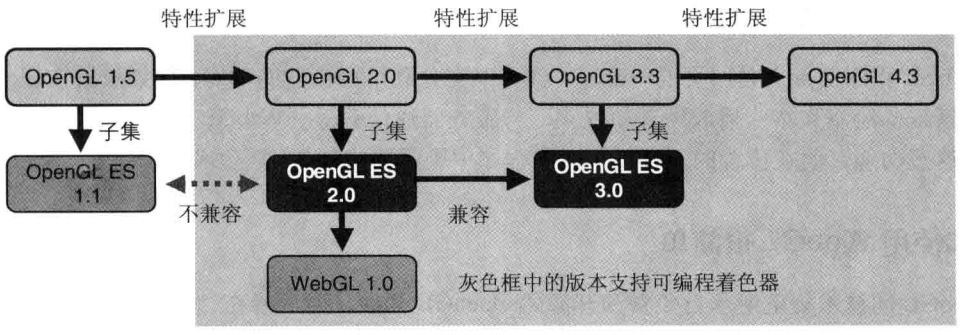
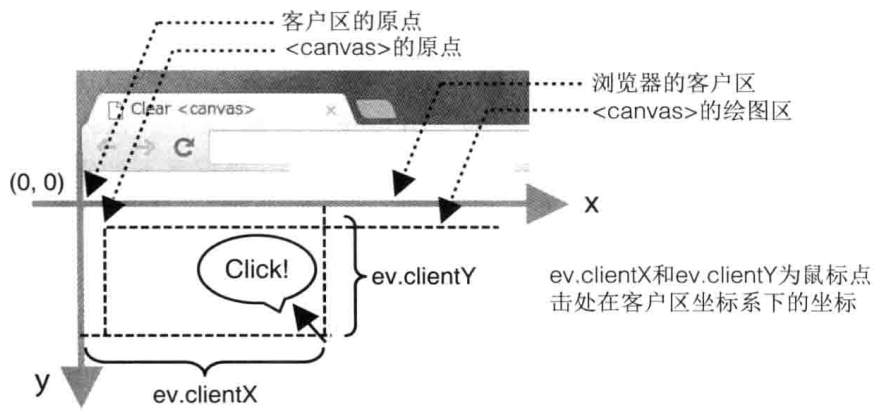
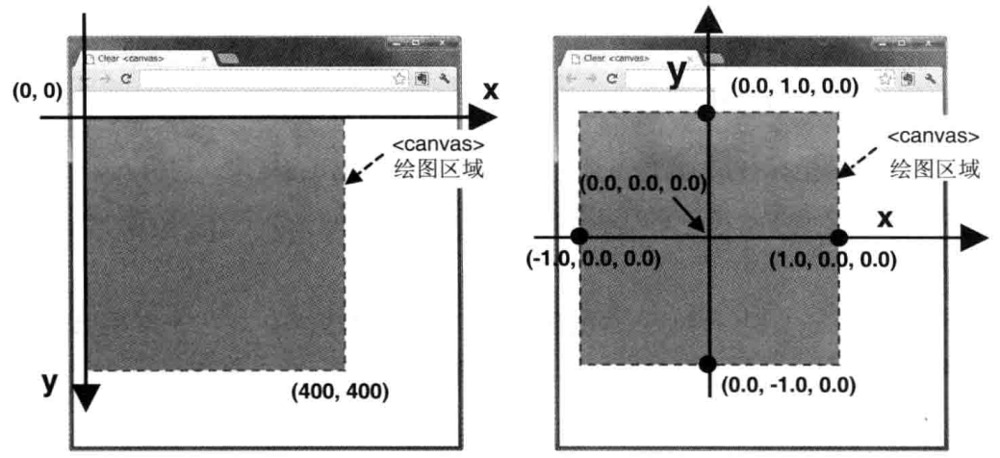
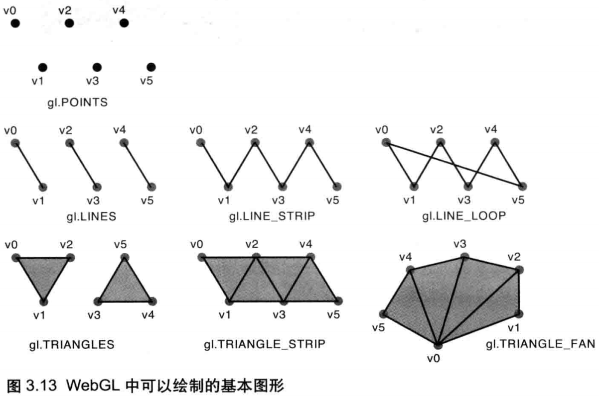
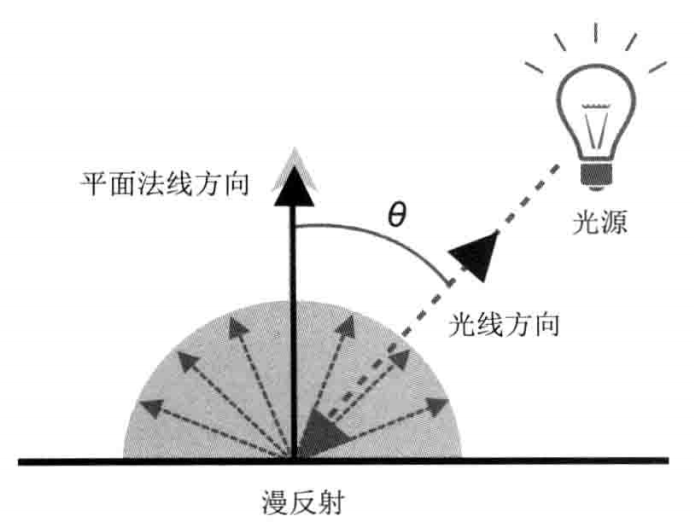
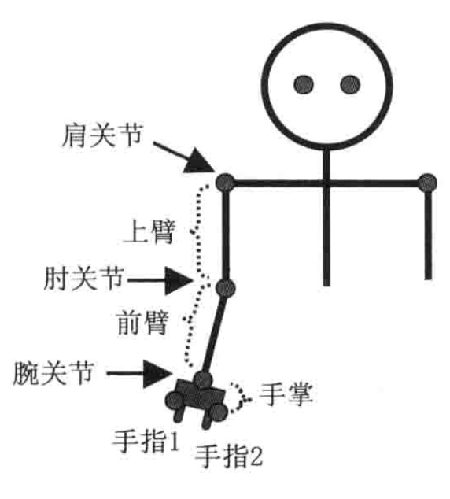
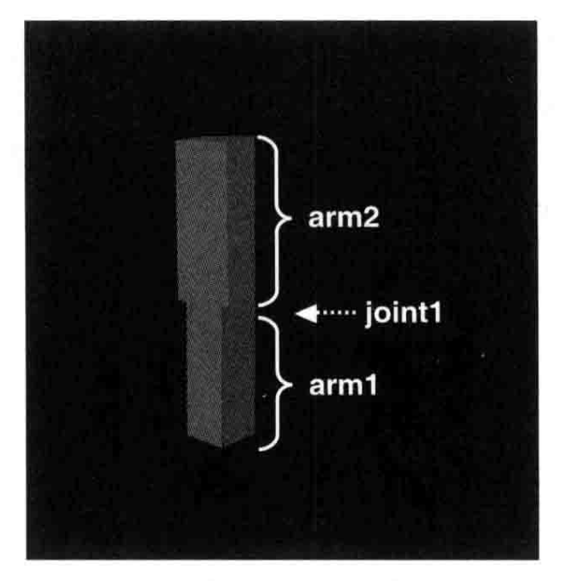

1 WebGL概述
OpenGL & OpenGL ES & WebGL的版本对应关系

2 WebGL入门
零散
片段（fragment，也称为片元）是一个WebGL术语，你可以将其理解为像素。
顶点着色器中的gl_position是一个齐次坐标，对于笛卡尔坐标系下的点(x,y,z)，它的齐次坐标就是(x,y,z,1.0)。
顶点着色器进行的是逐顶点的操作，片段着色器进行的是逐片段的操作。
向attribute变量传值原理
1
2
3
4
5
|
// 顶点着色器代码
attribute vec4 a_Position;
void main() {
gl_Position = a_Position;
}
|
1
2
3
4
5
6
7
|
// js代码
// Get the storage location of a_Position
var a_Position = gl.getAttribLocation(program, 'a_Position');
if (a_Position < 0) {
console.log('Failed to get the storage location of a_Position');
return;
}
|
WebGL会解析着色器程序，辨别出其中的attribute变量。每个attribute变量都有一个存储地址，我们通过getAttribLocation函数来获取这个存储地址，然后就可以通过这个存储地址来向该attribute变量传值。
向uniform变量传值的原理也类似。
获取鼠标点击位置在WebGL中对应的点的坐标
注意两点：
1.鼠标点击位置坐标是在“浏览器客户区”(client area)中的坐标，而不是<cavas>中的。

2.<cavas>的坐标系统（下左图）与WebGL的坐标系统（下右图），其原点位置和Y轴的正方向都不一样。

1
2
3
4
5
6
7
8
9
10
11
12
13
14
15
16
|
canvas.onmousedown = function (ev) {
click(ev, gl, canvas, a_Position);
};
var g_points = [];
function click(ev, gl, canvas, a_Position) {
var x = ev.clientX; // x coordinate of a mouse pointer
var y = ev.clientY; // y coordinate of a mouse pointer
var rect = ev.target.getBoundingClientRect();
x = ((x - rect.left) - canvas.width / 2) / (canvas.width / 2);
y = (canvas.height / 2 - (y - rect.top)) / (canvas.height / 2);
// Store the coordinates to g_points array
g_points.push(x);
g_points.push(y);
}
|
以横坐标的换算x = ((x - rect.left) - canvas.width / 2) / (canvas.width / 2)为例：
x - rect.left：得到鼠标点击位置在canvas中的坐标。- canvas.width / 2：平移坐标系。/ (canvas.width / 2)：缩放坐标系。
3 绘制和变换三角形
零散
不管三维模型的形状多么复杂，其基本组成单位都是三角形。
使用缓冲区对象向顶点着色器传入顶点数据
缓冲区对象(buffer object)是WebGL系统中的一块内存区域，我们可以在缓冲区对象中保存大量的顶点数据，供顶点着色器使用。
以下代码以传递顶点坐标为例。实际上传递顶点颜色、顶点纹理坐标等也是一样的方法。
1
2
3
4
5
6
7
8
9
10
11
12
13
14
15
16
17
18
19
20
21
22
23
24
25
26
27
28
29
30
31
32
33
34
35
36
37
38
39
40
41
42
43
44
45
|
function initVertexBuffers(gl) {
// 顶点坐标。三组，每组两个，分别为x和y
// 使用了WebGL提供的类型化数组，即元素只能是某种类型的数组
// WebGL 处理类型化数组 会比 处理元素可能是任意类型的普通数组Array 效率更高
var vertices = new Float32Array([
0.0, 0.5, -0.5, -0.5, 0.5, -0.5
]);
var n = 3; // 顶点数量
// 创建缓冲区对象
var vertexBuffer = gl.createBuffer();
if (!vertexBuffer) {
console.log('Failed to create the buffer object');
return -1;
}
// 将缓冲区对象绑定到目标ARRAY_BUFFER
// bindBuffer(target, buffer)
// 目标有两种：
// 1.ARRAY_BUFFER: 表示缓冲区对象用来存储顶点数据
// 2.ELEMENT_ARRAY_BUFFER: 表示缓冲区对象用来存储顶点的索引值
gl.bindBuffer(gl.ARRAY_BUFFER, vertexBuffer);
// 向绑定到ARRAY_BUFFER的缓冲区对象写入数据
// bufferData(target, data, usage)
// usage表示程序将如何使用缓冲区中的数据。该参数将帮助webgl优化操作，但即便你传入了错误的值，程序也能运行，只是效率会略低
// gl.STATIC_DRAW: 缓冲区的内容可能经常使用，而不会经常更改。
// gl.DYNAMIC_DRAW: 缓冲区的内容可能经常使用，并且经常更改。
// gl.STREAM_DRAW: 缓冲区的内容可能不会经常使用。
gl.bufferData(gl.ARRAY_BUFFER, vertices, gl.STATIC_DRAW);
var a_Position = gl.getAttribLocation(gl.program, 'a_Position');
if (a_Position < 0) {
console.log('Failed to get the storage location of a_Position');
return -1;
}
// 将与ARRAY_BUFFER绑定的缓冲区对象分配给a_Position
// vertexAttribPointer(location, size, type, normalized, stride, offset)
// size: 指定缓冲区中每个顶点的分量个数(1到4)。若size比attribute变量需要的分量数小，缺失分量将被自动补全。
// 比如，如果size为1，那么第二三分量会自动设为0，第四分量会自动设为1。
// stride: 相邻两个顶点间的字节数。如果指定为0，则会根据size和type自动计算。
gl.vertexAttribPointer(a_Position, 2, gl.FLOAT, false, 0, 0);
// 使分配生效
gl.enableVertexAttribArray(a_Position);
return n;
}
|
图元类型
gl.drawArrays(mode, first, count)：
- mode: 要绘制的图元类型。
- first: 从哪个顶点开始绘制。
- count: 要绘制多少个顶点。
图元类型有以下几种：
- POINTS：绘制点。
- LINES：绘制线。将传入的顶点，依次两两配对组成线段进行绘制（即，假设有ABCD四个顶点，则会在AB之间、CD之间分别绘制线段），若顶点数为奇数，则将最后一个给忽略掉。
- LINE_STRIP：绘制线。将传入的顶点，进行依次的连接绘制。
- LINE_LOOP：绘制线。将传入的顶点，进行依次的连接绘制，最后将首尾顶点进行连接，形成一个闭环。
- TRIANGLE：绘制三角形。
- TRIANGLE_STRIP：绘制三角形带。前三个点构成了第1个三角形，从第2个点开始的3个点构成了第2个三角形，以此类推。这些三角形分别为(v0,v1,v2)、(v2,v1,v3)、(v2,v3,v4)…注意第2个三角形是(v2,v1,v3)而不是(v1,v2,v3)，这是为了保证它的绘制方向（顺时针或逆时针）和前一个三角形一致。
- TRIANGLE_FAN：绘制扇形。以第一个点为中心点，其它顶点作为边缘点绘制出组成扇型的相邻三角形。

TRIANGLE_STRIP稍微有点复杂。其规律是构建当前三角形的顶点的连接顺序依赖于要和前面已经出现过的2个顶点组成三角形的当前顶点的序号的奇偶性(如果从0开始)：
- 如果当前顶点是奇数：组成三角形的顶点排列顺序：T = [n-1 n-2 n].
- 如果当前顶点是偶数：组成三角形的顶点排列顺序：T = [n-2 n-1 n].
以上图为例，第一个三角形，顶点v2序号是2，是偶数，则顶点排列顺序是v0,v1,v2。第二个三角形，顶点v3序号是3，是奇数，则顶点排列顺序是v2,v1,v3，第三个三角形，顶点v4序号是4，是偶数，则顶点排列顺序是v2,v3,v4,以此类推。这个顺序是为了保证所有的三角形都是按照相同的方向绘制的，使这个三角形串能够正确形成表面的一部分。对于某些操作，维持方向是很重要的，比如剔除。
TRIANGLE_FAN与TRIANGLE_STRIP类似，不过它的三角形的顶点排列顺序是T = [0 n-1 n]。各三角形形成一个扇形序列。
4 高级变换与动画基础
矩阵乘法
矩阵乘法有结合律，但没有交换律。
顶点坐标vec4本质上也是一个4*1的矩阵，对于(矩阵A*矩阵B)*顶点坐标，根据矩阵乘法的结合律，它等价于矩阵A*(矩阵B*顶点坐标)，也就是说，对顶点坐标先做矩阵B对应的变换，再做矩阵A对应的变换。
5 颜色和纹理
纹理单元
WebGL通过一种称为 纹理单元(texture unit) 的机制来同时使用多个纹理。每个纹理单元有一个单元编号，管理一张纹理图像。
系统支持的纹理单元个数取决于硬件和浏览器的WebGL实现，默认情况下，WebGL至少支持8个纹理单元。
使用缓冲区对象向顶点着色器传入多种顶点数据
顶点着色器代码：
1
2
3
4
5
6
|
attribute vec4 a_Position;
attribute float a_PointSize;
void main() {
gl_Position = a_Position;
gl_PointSize = a_PointSize;
}
|
(1)使用多个缓冲区对象
1
2
3
4
5
6
7
8
9
10
11
12
13
14
15
16
17
18
19
20
21
22
23
24
25
26
27
|
function initVertexBuffers(gl) {
// 顶点坐标
var vertices = new Float32Array([
0.0, 0.5, -0.5, -0.5, 0.5, -0.5
]);
var n = 3;// 顶点数
var vertexBuffer = gl.createBuffer();
gl.bindBuffer(gl.ARRAY_BUFFER, vertexBuffer);
gl.bufferData(gl.ARRAY_BUFFER, vertices, gl.STATIC_DRAW);
var a_Position = gl.getAttribLocation(gl.program, 'a_Position');
gl.vertexAttribPointer(a_Position, 2, gl.FLOAT, false, 0, 0);
gl.enableVertexAttribArray(a_Position);
// 顶点的尺寸
var sizes = new Float32Array([
10.0, 20.0, 30.0
]);
var sizeBuffer = gl.createBuffer();
gl.bindBuffer(gl.ARRAY_BUFFER, sizeBuffer);
gl.bufferData(gl.ARRAY_BUFFER, sizes, gl.STATIC_DRAW);
var a_PointSize = gl.getAttribLocation(gl.program, 'a_PointSize');
gl.vertexAttribPointer(a_PointSize, 1, gl.FLOAT, false, 0, 0);
gl.enableVertexAttribArray(a_PointSize);
gl.bindBuffer(gl.ARRAY_BUFFER, null);
return n;
}
|
(2)使用单个缓冲区对象
1
2
3
4
5
6
7
8
9
10
11
12
13
14
15
16
17
18
19
20
21
22
23
24
25
26
27
28
29
30
31
|
function initVertexBuffers(gl) {
// 顶点的坐标和尺寸
var verticesSizes = new Float32Array([
0.0, 0.5, 10.0, // the 1st point
-0.5, -0.5, 20.0, // the 2nd point
0.5, -0.5, 30.0 // the 3rd point
]);
var n = 3; // 顶点数
// 缓冲区对象
var vertexSizeBuffer = gl.createBuffer();
gl.bindBuffer(gl.ARRAY_BUFFER, vertexSizeBuffer);
gl.bufferData(gl.ARRAY_BUFFER, verticesSizes, gl.STATIC_DRAW);
var FSIZE = verticesSizes.BYTES_PER_ELEMENT;
// 顶点坐标
var a_Position = gl.getAttribLocation(gl.program, 'a_Position');
// vertexAttribPointer(location, size, type, normalized, stride, offset)
gl.vertexAttribPointer(a_Position, 2, gl.FLOAT, false, FSIZE * 3, 0);
gl.enableVertexAttribArray(a_Position);
// 顶点的尺寸
var a_PointSize = gl.getAttribLocation(gl.program, 'a_PointSize');
// vertexAttribPointer(location, size, type, normalized, stride, offset)
gl.vertexAttribPointer(a_PointSize, 1, gl.FLOAT, false, FSIZE * 3, FSIZE * 2);
gl.enableVertexAttribArray(a_PointSize);
gl.bindBuffer(gl.ARRAY_BUFFER, null);
return n;
}
|
使用多幅纹理
在本章之前说过，WebGL可以同时处理多幅纹理，纹理单元就是为了这个目的而设计的。
1
2
3
4
5
6
7
8
9
10
11
12
13
14
15
16
17
18
19
20
21
22
23
24
25
26
27
28
29
30
31
32
33
34
35
36
37
38
39
40
41
42
43
44
45
46
47
48
49
50
51
52
53
54
55
56
57
58
59
60
61
62
63
64
65
66
67
68
69
70
71
72
73
74
75
76
77
78
79
80
81
82
83
84
85
86
87
88
89
90
91
92
93
94
95
96
97
98
99
100
101
102
103
104
105
106
107
108
109
110
111
112
113
114
115
116
117
118
119
120
121
122
123
124
125
126
127
128
129
130
131
132
133
134
135
136
137
138
139
140
141
142
143
144
145
|
var VSHADER_SOURCE = `
attribute vec4 a_Position;
attribute vec2 a_TexCoord;
varying vec2 v_TexCoord;
void main() {
gl_Position = a_Position;
v_TexCoord = a_TexCoord;
}
`;
var FSHADER_SOURCE = `
#ifdef GL_ES
precision mediump float;
#endif
uniform sampler2D u_Sampler0;
uniform sampler2D u_Sampler1;
varying vec2 v_TexCoord;
void main() {
vec4 color0 = texture2D(u_Sampler0, v_TexCoord);
vec4 color1 = texture2D(u_Sampler1, v_TexCoord);
gl_FragColor = color0 * color1;
}
`;
function main() {
var canvas = document.getElementById('webgl');
var gl = getWebGLContext(canvas);
if (!gl) {
console.log('Failed to get the rendering context for WebGL');
return;
}
if (!initShaders(gl, VSHADER_SOURCE, FSHADER_SOURCE)) {
console.log('Failed to intialize shaders.');
return;
}
var n = initVertexBuffers(gl);
if (n < 0) {
console.log('Failed to set the vertex information');
return;
}
gl.clearColor(0.0, 0.0, 0.0, 1.0);
if (!initTextures(gl, n)) {
console.log('Failed to intialize the texture.');
return;
}
}
function initVertexBuffers(gl) {
var verticesTexCoords = new Float32Array([
// Vertex coordinate, Texture coordinate
-0.5, 0.5, 0.0, 1.0,
-0.5, -0.5, 0.0, 0.0,
0.5, 0.5, 1.0, 1.0,
0.5, -0.5, 1.0, 0.0,
]);
var n = 4; // The number of vertices
var vertexTexCoordBuffer = gl.createBuffer();
if (!vertexTexCoordBuffer) {
console.log('Failed to create the buffer object');
return -1;
}
gl.bindBuffer(gl.ARRAY_BUFFER, vertexTexCoordBuffer);
gl.bufferData(gl.ARRAY_BUFFER, verticesTexCoords, gl.STATIC_DRAW);
var FSIZE = verticesTexCoords.BYTES_PER_ELEMENT;
var a_Position = gl.getAttribLocation(gl.program, 'a_Position');
if (a_Position < 0) {
console.log('Failed to get the storage location of a_Position');
return -1;
}
gl.vertexAttribPointer(a_Position, 2, gl.FLOAT, false, FSIZE * 4, 0);
gl.enableVertexAttribArray(a_Position);
var a_TexCoord = gl.getAttribLocation(gl.program, 'a_TexCoord');
if (a_TexCoord < 0) {
console.log('Failed to get the storage location of a_TexCoord');
return -1;
}
gl.vertexAttribPointer(a_TexCoord, 2, gl.FLOAT, false, FSIZE * 4, FSIZE * 2);
gl.enableVertexAttribArray(a_TexCoord);
return n;
}
function initTextures(gl, n) {
var texture0 = gl.createTexture();
var texture1 = gl.createTexture();
if (!texture0 || !texture1) {
console.log('Failed to create the texture object');
return false;
}
var u_Sampler0 = gl.getUniformLocation(gl.program, 'u_Sampler0');
var u_Sampler1 = gl.getUniformLocation(gl.program, 'u_Sampler1');
if (!u_Sampler0 || !u_Sampler1) {
console.log('Failed to get the storage location of u_Sampler');
return false;
}
var image0 = new Image();
var image1 = new Image();
if (!image0 || !image1) {
console.log('Failed to create the image object');
return false;
}
image0.onload = function () { loadTexture(gl, n, texture0, u_Sampler0, image0, 0); };
image1.onload = function () { loadTexture(gl, n, texture1, u_Sampler1, image1, 1); };
image0.src = '../resources/sky.jpg';
image1.src = '../resources/circle.gif';
return true;
}
// Specify whether the texture unit is ready to use
var g_texUnit0 = false, g_texUnit1 = false;
function loadTexture(gl, n, texture, u_Sampler, image, texUnit) {
// 翻转y轴(因为图片的y轴方向与纹理坐标的y轴方向相反)
// Flip the image's y-axis
gl.pixelStorei(gl.UNPACK_FLIP_Y_WEBGL, 1);
// 激活纹理单元
if (texUnit == 0) {
gl.activeTexture(gl.TEXTURE0);
g_texUnit0 = true;
} else {
gl.activeTexture(gl.TEXTURE1);
g_texUnit1 = true;
}
gl.bindTexture(gl.TEXTURE_2D, texture); // 绑定
gl.texParameteri(gl.TEXTURE_2D, gl.TEXTURE_MIN_FILTER, gl.LINEAR); // 设置纹理参数
gl.texImage2D(gl.TEXTURE_2D, 0, gl.RGBA, gl.RGBA, gl.UNSIGNED_BYTE, image); // 将image传递给texture
gl.uniform1i(u_Sampler, texUnit);
gl.clear(gl.COLOR_BUFFER_BIT);
if (g_texUnit0 && g_texUnit1) {
gl.drawArrays(gl.TRIANGLE_STRIP, 0, n); // Draw the rectangle
}
}
|
6 GLSL ES
WebGL所使用的着色器语言是GLSL ES 1.0的子集。
GLSL ES编程语言是在OpenGL着色器语言(GLSL)的基础上，删除和简化一部分功能后形成的，由此带来的好处是降低了硬件功耗和性能开销。
其他部分内容已整理至《GLSL.md》。
7 进入三维世界
可视空间
有两类常用的可视空间：
- 长方体可视空间，也称盒状空间，由正射投影(orthographic projection)产生。
- 截锥体/金字塔可视空间，由透视投影(perspective projection)产生。
在透视投影下，物体表现为近大远小，产生的三维场景看上去更有深度感，更加自然，因为我们平时观察真实世界用的也是透视投影。在大多数情况下，比如三维射击类游戏中，我们都应当采用透视投影。相比之下，正射投影的好处是用户可以方便地比较场景中物体（比如两个原子的模型）的大小，这是因为物体看上去的大小与距离的远近没有关系。在建筑平面图等技术绘图的相关场合，应当使用这种投影。
<canvas＞上显示的就是可视空间中物体在近裁剪面(即near面)上的投影。如果近裁剪面的宽高比和<canvas＞不一样，那么画面就会被按照<canvas＞的宽高比进行拉伸和压缩，显示出来的物体就会变形。
正确处理对象的前后关系
在默认情况下，WebGL为了加速绘图操作，是按照顶点在缓冲区中的顺序来处理顶点数据和绘制图形的，后绘制的图形会遮挡先绘制的图形，而不管他们真实的前后位置关系。
隐藏面消除
为了解决这个问题，WebGL提供了隐藏面消除(hidden surface removal)功能，当开启这个功能后，在绘制各个像素前会进行深度检测，如果发现这个像素比较“深”(也就是距离观察者较远)且会被近处的物体挡住，那么就不会绘制它。
开启深度检测：
1
|
gl.enable(gl.DEPTH_TSET);
|
绘制每帧图像前都需要清除颜色缓冲和深度缓冲(深度缓冲用来存储深度信息，因为深度一般是指z坐标，所以也称为z缓冲)：
1
|
gl.clear(gl.COLOR_BUFFER_BIT|gl.DEPTH_BUFFER_BIT);
|
深度缓冲区中记录了画布上每个位置的最前面的片元的深度（也就是该位置的最小片元深度）。当新绘制一个片元时，会先将它的深度与深度缓冲区中记录的同位置的深度对比，如果新绘制的片元的深度大于缓冲区中的深度，说明该片元会被遮挡，则不绘制；如果新绘制的片元的深度小于缓冲区中的深度，则绘制该片元，并将该片元的深度写入到深度缓冲区中。
深度冲突(了解)
隐藏面消除是WebGL的一项复杂而又强大的特性，在绝大多数情况下，它都能很好地完成任务。然而，当几何图形或物体的两个表面极为接近时，就会出现新的问题，使得表面看上去斑斑驳驳的，这种现象被称为深度冲突（z fghting）。
之所以会产生深度冲突，是因为两个表面过于接近，深度缓冲区有限的精度已经不能区分哪个在前，哪个在后了。严格地说，如果创建三维模型阶段就对顶点的深度值加以注意，是能够避免深度冲突的。但是，当场景中有多个运动着的物体时，实现这一点几乎是不可能的。
WebGL提供一种被称为多边形偏移（polygon offeet）的机制来解决这个问题。该机制将自动在Z值加上一个偏移量，偏移量的值由物体表面相对于观察者视线的角度来确定。
示例：
1
2
3
4
5
6
7
8
9
10
11
12
13
14
15
16
17
18
19
20
21
22
23
24
25
26
|
function main() {
...
// 开启多边形偏移
gl.enable(gl.POLYGON_OFFSET_FILL);
// 先绘制一个三角形
gl.drawArrays(gl.TRIANGLES, 0, n / 2); // The green triangle
// 设置多边形偏移参数后再绘制一个三角形
gl.polygonOffset(1.0, 1.0); // Set the polygon offset
gl.drawArrays(gl.TRIANGLES, n / 2, n / 2); // The yellow triangle
}
function initVertexBuffers(gl) {
var verticesColors = new Float32Array([
// Vertex coordinates and color
0.0, 2.5, -5.0, 0.4, 1.0, 0.4, // The green triangle
-2.5, -2.5, -5.0, 0.4, 1.0, 0.4,
2.5, -2.5, -5.0, 1.0, 0.4, 0.4,
0.0, 3.0, -5.0, 1.0, 0.4, 0.4, // The yellow triagle
-3.0, -3.0, -5.0, 1.0, 1.0, 0.4,
3.0, -3.0, -5.0, 1.0, 1.0, 0.4,
]);
var n = 6;
...
}
|
通过顶点索引绘制物体
在调用gl.drawElements()时， WebGL首先从绑定到gl.ELEMENT_ARRAY_BUFFER的缓冲区中获取顶点的索引值，然后根据该索引值，从绑定到gl.ARRAY_BUFFER的缓冲区中获取顶点的坐标、颜色等信息，然后传递给attribute变量并执行顶点着色器。对每个索引值都这样做，最后就绘制出了整个图形，而此时你只调用了一次gl.drawElements()。这种方式通过索引来访问顶点数据，从而实现重复利用顶点信息，控制内存的开销，但代价是你需要通过索引来间接地访问顶点，在某种程度上使程序复杂化了。所以，gl.drawElements()和gl.drawArrays()各有优劣，具体用哪一个取决于具体的需求。
8 光照
光源类型
- 平行光(方向光)：顾名思义，平行光的光线是相互平行的，平行光具有方向。平行光可以看作是无限远处的光源（比如太阳）发出的光。因为太阳距离地球很远，所以阳光到达地球时可以认为是平行的。平行光很简单，可以用一个方向和一个颜色来定义（光的颜色中已经包含了光强度信息，比如(2,2,2)是比(1,1,1)更强的白光）。
- 点光源光：点光源光是从一个点向周围的所有方向发出的光。点光源光可以用来表示现实中的灯泡、火焰等。我们需要指定点光源的位置和颜色。光线的方向将根据点光源的位置和被照射之处的位置计算出来，因为点光源的光线方向在场景内的不同位置是不同的。
- 环境光：环境光（间接光）是指那些经光源（点光源或平行光源）发出后，被墙壁等物体多次反射，然后照到物体表面上的光。环境光从各个角度照射物体，其强度都是一致的。比如说，在夜间打开冰箱的门，整个厨房都会有些微微亮，这就是环境光的作用。环境光不用指定位置和方向，只需要指定颜色即可。
反射类型
我们能看见物体是因为物体的反射光进入了我们的眼睛。
- 漫反射：针对平行光和点光源。详见书。
- 环境反射：针对环境光。详见书。
平行光下的漫反射计算原理
详见书page286开始。
1
2
3
4
5
6
|
// θ为入射角
// 在glsl中，两个矢量的相乘(*)的结果是仍是一个矢量
漫反射光颜色 = 物体表面基色*入射光颜色*cosθ
// 两个矢量的点乘积是一个标量
漫反射光颜色 = 物体表面基色*入射光颜色*(物体表面法线方向·光线方向)
|

注意，这里所谓的“光线方向”，实际上是入射方向的反方向，即从入射点指向光源，只有这样，该方向与法线方向之间的夹角才是入射角。
环境反射计算原理
进一步地：
1
|
漫反射光颜色+环境反射光颜色 = 物体表面基色*( 漫反射入射光颜色*(物体表面法线方向·光线方向) + 环境光颜色 )
|
魔法矩阵：逆转置矩阵
需要注意的是，立方体旋转时，每个顶点的法向量也会随之变化。
以顶点法向量乘以模型矩阵的逆转置矩阵，就可以求得顶点在经过模型矩阵变换后的新的法向量。
准确地说，应该用modelviewMatrix的逆转置矩阵。
因为viewMatrix本质上和modelMatrix一样，都是对物体进行旋转、平移、缩放等操作，所以这里笼统地把modelviewMatrix称为modelMatrix。
点光源下的漫反射计算原理
平行光的入射方向始终不变，而点光源的入射方向随被照射点位置的不同而不同。
前面我们根据每个顶点的法向量和平行光人射方向来计算反射光的颜色。这一节还是采用该方法，只不过点光源光的方向不再是恒定不变的，而要根据每个顶点的位置逐一计算。着色器需要知道点光源的所在位置，而不是光的方向。
1
2
3
4
5
6
7
8
9
10
11
12
13
14
15
16
17
18
19
20
21
22
23
24
25
26
27
|
attribute vec4 a_Position; // 顶点位置
attribute vec4 a_Color; // 顶点颜色
attribute vec4 a_Normal; // 顶点法向量
uniform mat4 u_MvpMatrix; // model view projection复合矩阵
uniform mat4 u_ModelMatrix; // model矩阵
uniform mat4 u_NormalMatrix; // model矩阵的逆转置矩阵，用来变换顶点法向量
uniform vec3 u_LightColor; // 点光源颜色
uniform vec3 u_LightPosition; // 点光源位置 (世界坐标系)
uniform vec3 u_AmbientLight; // 环境光颜色
varying vec4 v_Color;
void main() {
gl_Position = u_MvpMatrix * a_Position;
// 计算经过模型矩阵变换后的顶点的法向量
vec3 normal = normalize(vec3(u_NormalMatrix * a_Normal));
// 计算经过模型矩阵变换后的顶点的坐标（即世界坐标）
vec4 vertexPosition = u_ModelMatrix * a_Position;
// 计算光照方向
vec3 lightDirection = normalize(u_LightPosition - vec3(vertexPosition));
// cosθ
float nDotL = max(dot(lightDirection, normal), 0.0);
// 漫反射光
vec3 diffuse = u_LightColor * a_Color.rgb * nDotL;
// 环境光
vec3 ambient = u_AmbientLight * a_Color.rgb;
// 总的光照效果
v_Color = vec4(diffuse + ambient, a_Color.a);
};
|
更逼真的效果：逐片元光照(了解)
WebGL系统会根据顶点的颜色，内插出表面上每个片元的颜色。实际上，点光源光照射到一个表面上所产生的效果（即每个片元获得的颜色）与简单使用4个顶点颜色（虽然这4个顶点的颜色也是由点光源产生）内插出的效果并不完全相同（在某些极端情况下甚至很不一样），所以为了使效果更加逼真，我们需要对表面的每一点（而不仅仅是4个顶点）计算光照效果。
1
2
3
4
5
6
7
8
9
10
11
12
13
14
15
16
17
18
19
20
|
// 顶点着色器
attribute vec4 a_Position; // 顶点坐标
attribute vec4 a_Normal; // 顶点法向量
uniform mat4 u_MvpMatrix; // model view projection复合矩阵
uniform mat4 u_ModelMatrix; // model矩阵
uniform mat4 u_NormalMatrix; // model矩阵的逆转置矩阵，用来变换顶点法向量
varying vec4 v_Color; // 传递给片元着色器的片元颜色
varying vec3 v_Normal; // 传递给片元着色器的片元的法向量
varying vec3 v_Position; // 传递给片元着色器的片元的坐标
void main() {
vec4 color = vec4(1.0, 1.0, 1.0, 1.0);
gl_Position = u_MvpMatrix * a_Position;
// 计算经过模型矩阵变换后的顶点的坐标（即世界坐标）
v_Position = vec3(u_ModelMatrix * a_Position);
// 计算经过模型矩阵变换后的顶点的法向量
v_Normal = normalize(vec3(u_NormalMatrix * a_Normal));
v_Color = color;
};
|
1
2
3
4
5
6
7
8
9
10
11
12
13
14
15
16
17
18
19
20
21
22
23
24
25
|
// 片元着色器
#ifdef GL_ES
precision mediump float;
#endif
uniform vec3 u_LightColor; // 点光源颜色
uniform vec3 u_LightPosition; // 点光源位置 (世界坐标系)
uniform vec3 u_AmbientLight; // 环境光颜色
varying vec3 v_Normal; // 片元的法向量
varying vec3 v_Position; // 片元的坐标
varying vec4 v_Color; // 片元的颜色
void main() {
// 对片元的法向量进行归一化(单位化)，因为顶点的法向量经过内插之后有可能不再是单位向量
vec3 normal = normalize(v_Normal);
// 计算光照方向
vec3 lightDirection = normalize(u_LightPosition - v_Position);
// cosθ
float nDotL = max(dot(lightDirection, normal), 0.0);
// 漫反射光
vec3 diffuse = u_LightColor * v_Color.rgb * nDotL;
// 环境光
vec3 ambient = u_AmbientLight * v_Color.rgb;
// 总的光照效果
gl_FragColor = vec4(diffuse + ambient, v_Color.a);
};
|
顶点着色器使用模型矩阵乘以顶点坐标计算出顶点的世界坐标，将其赋值给v_Position变量，经过内插过程后，片元着色器就获得了逐片元的v_Position变量，也就是片元的世界坐标。类似地，顶点着色器将顶点的法向量赋值给v_Normal变量，经过内插，片元着色器就获得了逐片元的v_Normal变量，即片元的法向量。
9 层次模型
层次结构模型

绘制机器人手臂这样一个复杂的模型，最常用的方法就是按照模型中各个部件的层次顺序，从高到低逐一绘制，并在每个关节上应用模型矩阵。
注意，三维模型和现实中的人类或机器人不一样，它的部件并没有真正连接在一起。如果直接转动上臂，那么肘部以下的部分，包括前臂、手掌和手指，只会留在原地，这样手臂就断开了。所以，当上臂绕肩关节转动时，你需要在代码中实现“肘部以下部分跟随上臂转动”的逻辑。具体地，上臂绕肩关节转动了多少度，肘部以下的部分也应该绕肩关节转动多少度。
当情况较为简单时，实现“部件A转动带动部件B转动”可以很直接，只要对部件B也施以部件A的旋转矩阵即可。比如，使用模型矩阵使上臂绕肩关节转动30度，然后在绘制肘关节以下的各部位时，为它们施加同一个模型矩阵，也令其绕肩关节转动30度，这样，肘关节以下的部分就能自动跟随上臂转动了。
如果情况更复杂一些，比如先使上臂绕肩关节转动30度，然后使前臂绕肘关节转动10度，那么对肘关节以下的部分，你就得先施加上臂绕肩关节转动30度的矩阵（可称为“肩关节模型矩阵” ) ，然后再施加前臂绕肘关节转动10度的矩阵。将这两个矩阵相乘，其结果可称为“肘关节模型矩阵”，那么在绘制肘关节以下部分的时候，直接应用这个所谓的“肘关节模型矩阵”。
按照上述方式编程，三维场景中的肩关节就能影响肘关节，使得上臂的运动带动前臂的运动；反过来，不管前臂如何运动都不会影响上臂。这就与现实中的情况相符合了。
单关节模型
下图中，arm1是上臂，arm2是前臂。

1
2
3
4
5
6
7
8
9
10
11
12
13
|
...
// 先绘制Arm1
var arm1Length = 10.0; // Length of arm1
// 注意：带有set的函数，不会保留矩阵原有的变换；不带有set的函数，会保留矩阵原有的变换
g_modelMatrix.setTranslate(0.0, -12.0, 0.0);
g_modelMatrix.rotate(g_arm1Angle, 0.0, 1.0, 0.0); // Rotate around the y-axis
drawBox(gl, n, viewProjMatrix, u_MvpMatrix, u_NormalMatrix); // Draw
// 再绘制Arm2
g_modelMatrix.translate(0.0, arm1Length, 0.0); // Move to joint1
g_modelMatrix.rotate(g_joint1Angle, 0.0, 0.0, 1.0); // Rotate around the z-axis
drawBox(gl, n, viewProjMatrix, u_MvpMatrix, u_NormalMatrix); // Draw
...
|
绘制arm1和arm2使用了同一个模型矩阵g_modelMatrix，这样上面对arm1所做的旋转操作也会被应用到arm2上。
10 高级技术
选中物体
技巧：
- 当鼠标左键按下时，将整个立方体重绘为单一的红色。
- 读取鼠标点击处的颜色。
- 使用立方体原来的颜色对其进行重绘。
- 如果第2步读取到的颜色是红色，说明选中了物体。
对于具有多个物体的场景，这个简单的方法也能适用，只需要为场景中的每个物体都指定不同的颜色即可。
HUD
Head Up Display，抬头显示。它的作用，就是把时速、导航等重要的行车信息，投射到驾驶员前面的挡风玻璃上，让驾驶员尽量做到不低头、不转头就能看到时速、导航等重要的驾驶信息。
三维图形程序，尤其是游戏，也经常在三维场景上叠加文本或二维图形信息，以达到HUD的效果。
如何实现HUD？创建两个canvas重叠放置，在下层的canvas上使用WebGL绘制3D图形，在上层的canvas上使用canvas 2D API绘制HUD信息。
绘制圆形的点
见《GLSL.md》。
α混合
如何实现α混合
详见书。
混合函数
详见书。
半透明的三维物体
详见书。
透明与不透明物体共存
详见书。
切换着色器
通过gl.useProgram(...)来切换使用的着色器程序，也就切换了其相关联的顶点着色器和片段着色器。
使用渲染结果作为纹理——使用帧缓冲区对象
另一项简单而又强大的技术是，使用WebGL渲染三维图形，然后将渲染结果作为纹理贴到另一个三维物体上去。
在默认情况下，WebGL在颜色缓冲区中进行绘图，在开启隐藏面消除功能时，还会用到深度缓冲区。总之，绘制的结果图像是存储在颜色缓冲区中的。
帧缓冲区对象(framebuffer object) 可以用来代替颜色缓冲区和深度缓冲区。绘制在帧缓冲区中的对象并不会直接显示在<canvas>上，你可以先对帧缓冲区中的内容进行一些处理再显示，或者直接用其中的内容作为纹理图像。
在帧缓冲区中进行绘制的过程又称为离屏绘制(offscreen drawing)。
详见书。
绘制阴影
详见书。
加载OBJ格式的三维模型
详见书。
处理上下文丢失
WebGL使用了计算机的图形硬件，而这部分资源是被操作系统管理，由包括浏览器在内的多个应用程序共享。在某些特殊情况下，如另一个程序接管了图形硬件，或者操作系统进入休眠，浏览器就会失去使用这些资源的权利，并导致存储在图形硬件中的数据丢失。在这种情况下，WebGL绘图上下文就会丢失。
我们可以监听WebGL提供的webglcontextlost和webglcontextrestored事件来处理这种情况。
详见书。
11 附录
左手坐标系or右手坐标系
OpenGL裁剪坐标系、NDC是左手坐标系；数学、物理学、3D建模、OpenGL视觉坐标系(eye coordinates)等，是右手坐标系。
顶点着色器中的gl_position是顶点的裁剪坐标，因而使用的是左手坐标系。
通过投影矩阵的处理，顶点的视觉坐标变成了裁剪坐标，右手坐标系中的点被变换到左手坐标系中。